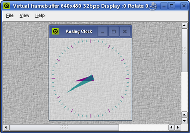

| Home · All Classes · Main Classes · Grouped Classes · Modules · Functions |
[Contents]
VNC (Virtual Network Computing) software makes it possible to view and interact with one computer (the "server") from any other computer or mobile device (the "viewer") anywhere on a network.
To run a Qtopia Core application using the VNC protocol, Qtopia Core must be configured using the -qt-gfx-vnc option:
cd path/to/Qtopia/Core
./configure -qt-gfx-vnc
make
Then start a Qtopia Core master application (i.e. construct a QApplication object with the QApplication::GuiServer flag or use the -qws command line parameter. See the Running Applications documentation for details). In addition, use the -display option to specify the VNC server's driver. For example:
cd path/to/Qtopia/Core/examples/widgets/analogclock
./analogclock -qws -display VNC:0
To interact with the application over the network, run a VNC client pointing at the machine that is running the Qtopia Core master application. VNC clients are available for a vast array of display systems: X11, Windows, Amiga, DOS, VMS, and dozens of others. For example, using the X11 VNC client to view the application from the same machine:
vncviewer localhost:0
Qtopia Core will create a 640 by 480 pixel display by default. Alternatively, the QWS_SIZE environment variable can be used to set another size, e.g. QWS_SIZE=240x320.
| The Virtual Framebuffer The Virtual Framebuffer is an alternative technique recommended for development and debugging purposes. The virtual framebuffer emulates a framebuffer using a shared memory region and the qvfb tool to display the framebuffer in a window. Its use of shared memory makes the virtual framebuffer much faster and smoother than using the VNC protocol, but it does not operate over a network. |  |
[Contents]
| Copyright © 2006 Trolltech | Trademarks | Qt 4.1.3 |